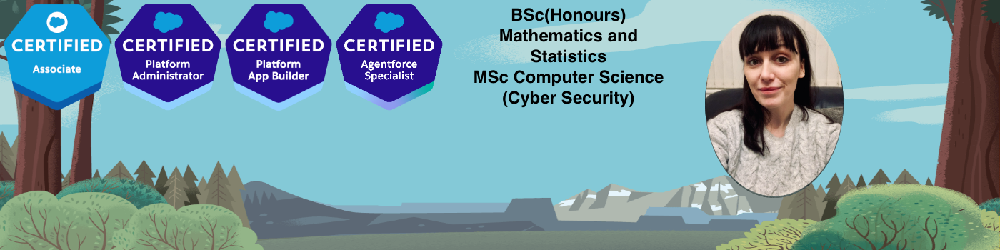

Intro

I build Salesforce solutions that improve process consistency, automate manual steps, and make reporting reliable.
This portfolio highlights a few projects where I designed objects, flows, and reporting to match real business workflows.
You can view my Projects to see detailed write-ups and screenshots.
Areas I focus on: Screen Flows, record-triggered automation, data modelling (including junction objects),
record types/paths, and reports & dashboards.
Projects

Select a project to view details, screenshots, and what I implemented.
Want something specific? Go to Contact and message me.
Recruitment App (JR)
A Salesforce app to support recruiters managing clients, job roles, candidates, applications, and interview stages.
Problem
Recruiters needed a structured way to track candidates applying to jobs and move them through consistent stages
while keeping reporting accurate.
Solution
- Built a data model for Clients, Jobs, Candidates, and Applications.
- Created Application as a junction object linking Candidate ↔ Job Position.
- Implemented application stages (1st interview, 2nd interview, assessment centre, final, offer, accepted, rejected).
- Configured related lists + list views to make day-to-day tracking easy.
- Added reporting foundations (e.g., accepted applications per month, jobs/applications by client).
Screenshots (add yours)
Replace these image files with your real screenshots (same filenames), or change the filenames below.


Back to Projects
Lead Conversion Demo
A demo build to understand and showcase how Salesforce converts Leads into Accounts, Contacts, and Opportunities,
including matching/duplicate behaviour.
What I built
- Created a clear conversion flow from lead qualification to conversion outputs.
- Tested scenarios where Salesforce detects existing Accounts/Contacts during conversion.
- Documented edge cases and the “why” behind each setup decision.
Screenshots (add yours)

Back to Projects
Flow Automation
A refactor of a complex screen flow to reduce decision logic and make behaviour data-driven and easier to maintain.
What I improved
- Simplified product selection by filtering using a checkbox on Product2 (data-driven).
- Reduced branching/decision complexity by relying on record data instead of hard-coded logic.
- Worked with loop + assignments patterns for scalable screen input handling.
Screenshots (add yours)

Back to Projects
About

I’m focused on building Salesforce solutions that are easy to use and easy to report on.
My strengths are data modelling, automation design (especially Flow), and turning messy processes into clear stages.
Core skills
- Flows: Screen Flows, record-triggered automation patterns
- Data model: relationships, junction objects, field design
- Reporting: dashboards, trends, process visibility
- Delivery: clean requirements → build → test → iterate
Contact